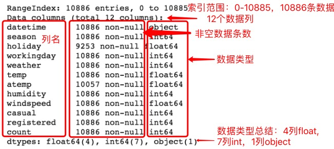

03. 练习：数据分析过程
数据分析过程练习
让我们通过对数据分析过程的每一步提问，来了解所有步骤。我们将使用来自 Kaggle 的单车共享需求 竞赛的数据。此数据集给出了自华盛顿特区实施“首都共享单车”计划以来的两年，自行车的每小时租金数据。下面是此数据前 5 行的屏幕截图。注意： 此数据集做了轻微修改。

点击图片以放大！
使用下表来帮助你回答第一个问题。每个特征都是数据集中的一列。
| 特征 | 描述 |
|---|---|
| 日期时间 datetime | 小时 + 时间戳 |
| 季节 season | 1 = 春季、2 = 夏季、3 = 秋季、4 = 冬季 |
| 假期 holiday | 该天是否为假日 |
| 工作日 workingday | 该天是否既不是周末，也不是假日 |
| 天气 weather* | 1、2、3、4（参见下面的描述） |
| 温度 temp | 摄氏度温度 |
| 环境温度 atemp | "感觉"温度（摄氏度） |
| 湿度 humidity | 相对湿度 |
| 风速 windspeed | 风速 |
| 游客 casual | 非注册用户使用共享单车的数量 |
| 会员 registered | 注册用户使用共享单车的数量 |
| 总计 count | 总使用次数 |
* 天气特征关键字
1 = 晴朗、少云、局部多云
2 = 薄雾 + 多云、薄雾 + 碎云、薄雾 + 少云、薄雾
3 = 小雪、小雨 + 雷雨 + 散云、小雨 + 散云
4 = 大雨 + 冰粒 + 雷雨 + 薄雾、雪 + 大雾
提问步骤
SOLUTION:
- 哪些属性在预测租用自行车的数量方面最为重要？
- 如果目标是使整个星期的租用数量呈现平稳状态，共享单车公司应该在一周中的哪天开展促销活动？

对下一个问题有用的每个列的统计数据
25%、50%、75%指的是四分位数（Quartile）。

# 每个列的非空值和数据类型
下面是对上面这幅图含义的详细解读，理解此图会对你完成和理解实战项目有帮助。
在此图中，有4列是 float - 浮点型，7列是 int - 整型，1列是object - 对象。其中datetime经过打印查看，确定类型为 str - 字符串。
Python 中的数据类型会在“第三天：Python 数字和字符串”中有更加详细的解释。

整理步骤
SOLUTION:
- 日期未采用日期格式
- 一些值缺失
- 温度值远远超出了地球上的现实范围

租赁的自行车数量与星期几、温度和湿度的散点图
探索步骤
SOLUTION:
温度
计数与温度散点图，及下一个问题的最佳匹配直线
得出结论步骤
SOLUTION:
250 辆自行车传达结果步骤
SOLUTION:
- 一份书面报告，详细说明了预测自行车租赁量的最重要变量